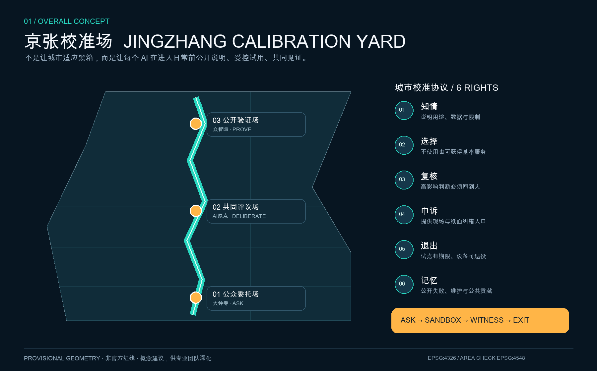
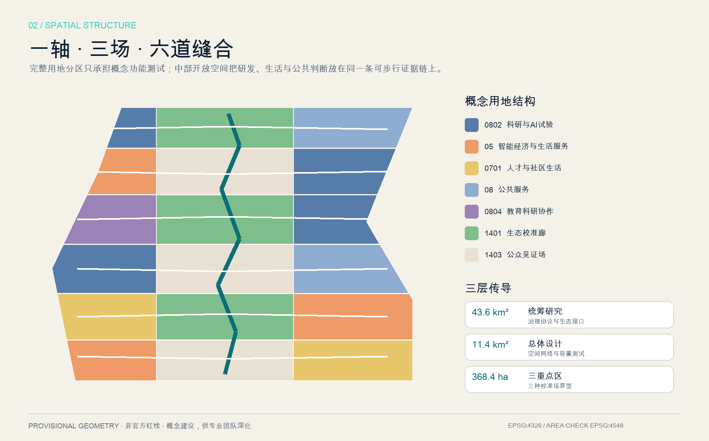
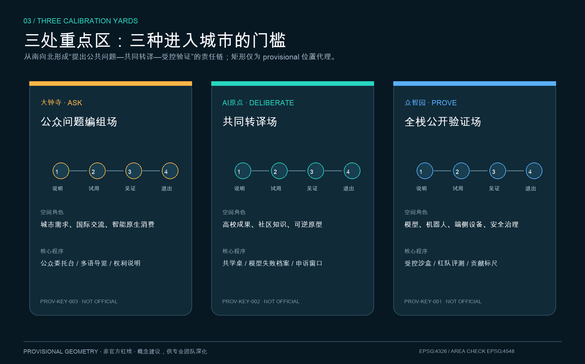
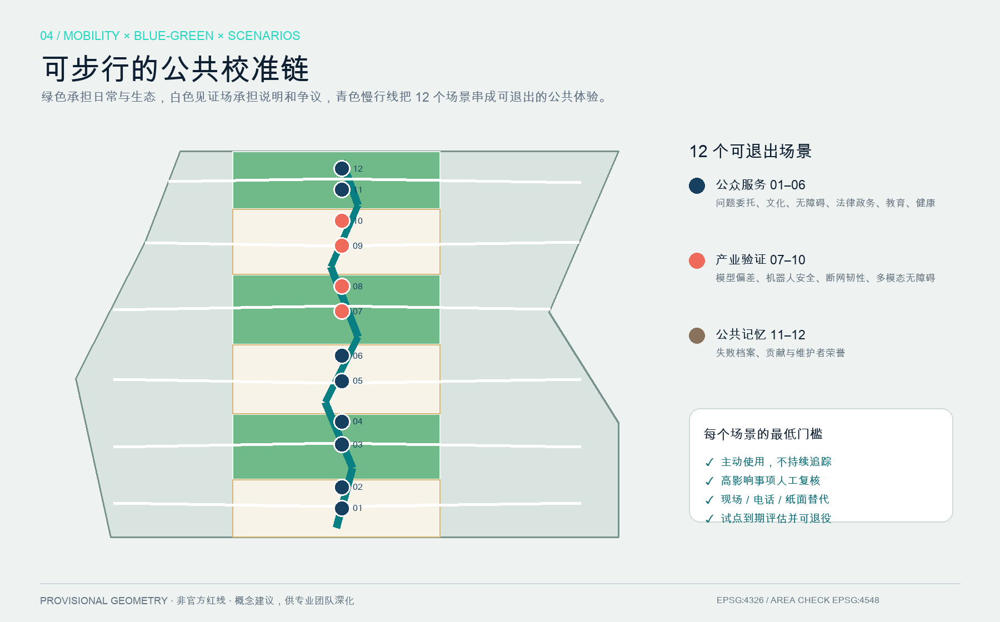
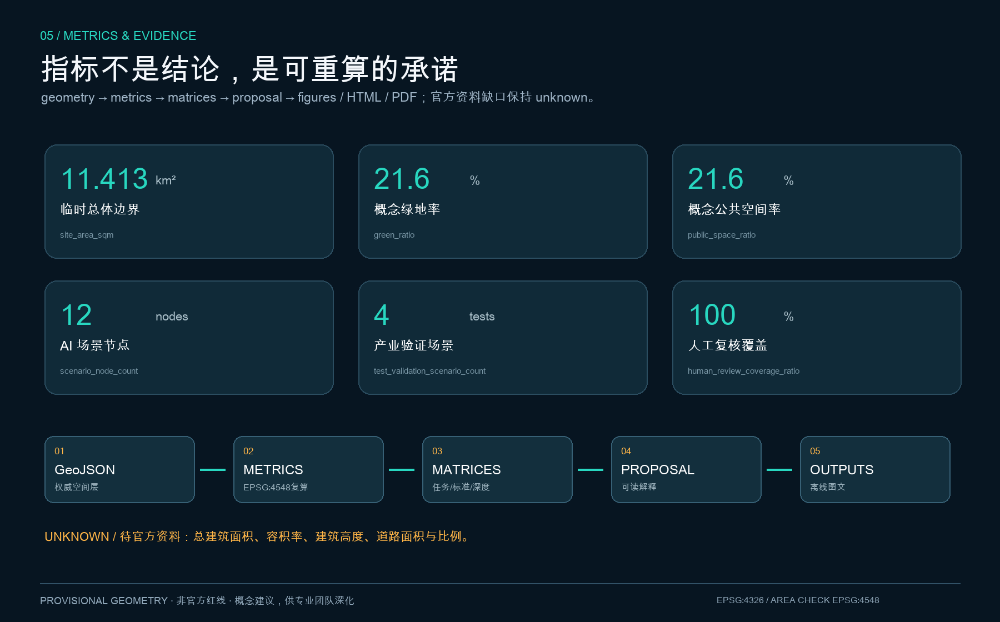

京张校准场：让 AI 先在公共空间证明自己
以一条公共校准链、三处校准场和六项城市权利，把模型、机器人与智能服务进入真实城市的过程变成可说明、可试用、可见证、可申诉、可退出的公共基础设施。
京张校准场：让 AI 先在公共空间证明自己
> **JINGZHANG CALIBRATION YARD**｜不是让城市适应黑箱，而是让每个 AI 在进入日常前公开说明、受控试用、共同见证。
本方案把京张铁路曾经承担的“校准时间、连接知识”转译为人工智能时代的公共任务：任何模型、机器人、端侧设备或智能服务，在进入真实城市前，都应回答“为谁服务、使用什么数据、谁来复核、失败如何退出、公共收益如何留下”。因此，“校准场”不是认证机构，也不是新的行政许可，而是一套可供专业团队深化的空间与运营参考方案。全文中的空间、政策、活动、招商、投资与分期均为开放共创建议，不替代正式规划，不构成政府审定或实施承诺。
设计依据与资料清单
方案第一依据是官方征集公告，用于确认三层范围、三处重点区、设计目标与成果语境；清权的智能体任务书用于确认三大定位、五大功能、三区两翼和六项 agent 任务；城市设计、控规与用地分类文件用于限定专业表达；临时几何只用于生成、包内复算和展示。[source:OFFICIAL-ANNOUNCEMENT] [source:AGENT-TASKBOOK] [source:SITE-PACKAGE] [source:SOURCE-REGISTRY] [source:PROCESSED-FACT-PACK] [standard:PROJECT-OFFICIAL-ANNOUNCEMENT] [standard:PROJECT-AGENT-OPEN-CALL-TASKBOOK] [standard:MOHURD-URBAN-DESIGN-MEASURES] [standard:MOHURD-CONTROL-DETAILED-PLANNING] [standard:MNR-LAND-USE-CLASSIFICATION-GUIDE]
本地建筑设计深度参考尚无可核验官方正文，因此只作为待补项，不作为已满足的权威依据。[standard:MOHURD-ARCH-DESIGN-DEPTH-2016] 现阶段缺 official polygon、道路红线、现状建筑与权属、控规指标、文保控制、市政容量和公共设施底数；这些缺口被写入 assumptions、constraints 与风险说明，而不是被推测数据填满。[depth:existing_conditions_diagnosis] [depth:risk_missing_data] [data:geometry/constraints.geojson#CONSTRAINTS]
geometry/site_boundary.geojson 来自仓库维护者登记的粗略 polygon；三个重点区也是临时位置代理。[source:BOUNDARY-SOURCE] [source:KEY-AREA-SOURCE] [data:geometry/site_boundary.geojson#SITE-001] [data:geometry/key_areas.geojson#PROV-KEY-001] 它们均为 official_boundary=false、geometry_role=provisional_constraint，不得作为 official redline、审批、权属、征拆或精确面积依据。official polygons 到位后，须依次替换 site/key areas，重做 land use、buildings、roads、green/public space、phasing、metrics、五图、HTML 和 PDF。
本包的权威顺序为 GeoJSON、metrics、三矩阵、manifest/来源/假设/自检、正文、图片、HTML/PDF。五张图是同源解释层，不替代结构化证据；图面未使用地图截图、远程瓦片、企业标识或第三方图片。

三层范围工作框架
三层范围共用一套“公共校准协议”。43.6 平方公里统筹研究层回答海淀如何把科研、产业、资本、算力、数据、场景与公众判断形成循环；约 11.4 平方公里总体设计层回答空间如何承载说明、试用、见证与退出；约 368.4 公顷重点区层回答三类原型如何分别落到公共界面、近校转化和全栈测试。[source:OFFICIAL-ANNOUNCEMENT] [depth:three_level_scope_framework] [depth:overall_spatial_structure]
总体结构为“**一轴、三场、六道缝合**”。一轴是沿京张遗址公园方向组织的 Calibration Walk；三场自南向北为大钟寺公众问题编组场、AI 原点共同转译场、众智园全栈公开验证场；六道东西慢行关系把高校、园区、社区和轨道接驳接入公共校准链。[data:geometry/roads.geojson#ROAD-001] 临时边界面积复算为 [metric:site_area_sqm]，它只检查包内一致性，不替代公告约值或 official polygon。
六项城市权利构成空间设计底线：**知情**（用途、数据和限制可读）、**选择**（不使用 AI 仍可获得基本服务）、**复核**（高影响判断回到有职责的人）、**申诉**（有现场和纸面纠错入口）、**退出**（试点有期限、设备可退役）、**记忆**（失败、维护和公共贡献可追溯）。这六项权利把“AI 治理全球话语权”从口号转成街道上可感知的接口。[source:AGENT-TASKBOOK]

统筹研究范围产业与未来城市研究
命名、Logo 与三区两翼回路
主名称为“**京张校准场**”，英文为 **JINGZHANG CALIBRATION YARD**。命名系统下设 ASK（提出公共问题）、DELIBERATE（共同转译）、PROVE（受控验证）、WITNESS（公众见证）、EXIT（退出与退役）五类空间动作。Logo 方向取一枚开放的轨距标尺：两条平行线代表技术性能与公共价值，中间缺口代表始终保留的人工判断；不用企业商标、人物、铁路现成标志或未经授权字体。VI 采用深蓝（可信公共底座）、青色（可复算证据）、橙色（公众行动），并提供高对比、触觉、中文/英文/图形并置版本。[standard:PROJECT-AGENT-OPEN-CALL-TASKBOOK]
三大定位被转译为三层内容：百年京张文化带保留“测量、连接、共同维护”的历史叙事；都市 AI 生活体验带提供可选择、可退出的日常服务；AI 融合创新带提供从虚拟评测到受控场景的测试阶梯。五大功能分别落在：众智园的全栈自主与治理验证、AI 原点的世界级创新生态、大钟寺与小月河方向的 AI+ 场景、整条慢行链的 AI 活力城市、中关村科技服务翼的法务/资本/知识产权/算力/数据合规接口。三区不是三个孤岛，两翼也不是单向输送通道：公共问题向北进入研发验证，失败与改进意见向南回到城市生活，构成闭环。[source:AGENT-TASKBOOK]
七个全球机制案例
本方案只借鉴机制，不移植形象、不声称案例方认可本方案：
| 案例 | 可转化机制 | 京张落点 | | --- | --- | --- | | NIST AI Risk Management Framework | 以治理、映射、测量、管理形成持续风险循环 | 六项城市权利与场景卡最低门槛 [source:CASE-NIST-AI-RMF] | | 欧盟 Testing and Experimentation Facilities | 虚拟、受控、真实环境逐级测试 | 众智园三层验证门 [source:CASE-EU-TEF] | | 新加坡 Punggol Digital District | 先在数字平台验证运营与空间协同 | 总体层先模拟、再小规模试用 [source:CASE-SG-PDD] | | Barcelona Innova Lab | 城市问题征集、限期试验、跨部门复核 | 大钟寺 ASK 与公开结项 [source:CASE-BCN-INNOVA] | | Helsinki Smart Kalasatama | 居民、企业与研究者共同定义小额敏捷试点 | AI 原点共同转译场 [source:CASE-FI-KALASATAMA] | | UK AI Safety Institute | 独立能力评测与风险研究 | 模型偏差公开评测及可读报告 [source:CASE-UK-AISI] | | European Commission JRC Living Labs | 在真实使用者参与下检验稳健性、互操作和接受度 | 多模态无障碍共同验收 [source:CASE-EU-JRC-LABS] |
案例数量为 [metric:global_case_count]。生态图谱由八个可审查接口组成：土地提供可逆载体、空间提供分级边界、产业提出真实问题、资金支持限期原型、人才跨界组队、算力按风险分级、数据最小化、场景由使用者和运营者共同结项。任何接口都要写明申请者、维护者、复核者、期限、退出条件与公共知识输出；不编造企业名单、投资额、产值或政策承诺。[depth:phasing_implementation]
总体设计范围城市更新与控规深度城市设计
总体设计不从“新建多少”开始，而从“哪些判断必须先公开”开始。18 个共享边界用地单元完整覆盖临时 site，形成两侧科研、教育、生活、商业与公共服务，中部绿地和公众见证场交替的结构。[data:geometry/land_use.geojson#LU-001] [depth:land_use_layout] 该分区用于验证功能组合、连续开放空间和拓扑，不代表现状或法定用地；official parcel 与控规到位后须重构。
更新采用“**90 天可逆原型—年度评估—扩大或退役**”方法。首层和公共前场优先放权利说明、共同评议、公共服务和可移动测试组件；研发与设备测试进入有边界的受控层。概念建筑基底由非开放空间单元内缩生成，仅测试空间容量，不表示现实建筑，也不作逐栋保留、改造、拆除或新建结论。[data:geometry/buildings.geojson#BLDG-001] [depth:retain_renovate_demolish] 逐栋深化必须先补年代、结构、用途、权属、文保、消防、日照与全生命周期碳评估。
建筑高度、总建筑面积、容积率、退线与密度控制缺官方依据，保持 unknown；本方案只提出风貌方法：沿公共校准链保持首层开放、低位信息面、可拆组件和连续檐下空间，避免以高塔、大屏或仿古构件替代公共性。精确高度、体量、屋顶、色彩和界面需在正式控规与文保资料下由专业团队深化。[depth:development_intensity_controls] [depth:height_massing_character] [standard:MOHURD-CONTROL-DETAILED-PLANNING]
市政与新型基础设施遵循“可维护、可断网、可退役”：端侧算力与传感设备共用可拆设备带，保留基本照明、座椅、厕所、饮水与无障碍通行；每件设备建立责任人、能耗、断网行为、人工替代和退役日期。因缺管线、能源、消防、防洪和排涝资料，本稿不作容量或工程线位结论。[depth:municipal_new_infrastructure]
重点区域详细设计

大钟寺 ASK｜公众问题编组场
大钟寺承担城市入口、国际交流和智能原生消费，但入口不是人脸门禁或实名“城市护照”。公共前场设置问题委托台、多语京张导览、AI 权利说明与人工服务；街区层组织可移动路演桌、社区需求墙和小型智能终端首用台；轨道接驳只提出四象限步行连续、非机动车有序停放和清楚换乘的方向性策略，待道路红线、客流、出入口和市政资料核验。[data:geometry/key_areas.geojson#PROV-KEY-003] [depth:three_key_area_detailed_design]
智能原生业态优先选择能在现场解释、现场退出的文化导览、服务导航和交互展示；商业推荐不得持续跟踪居民。空间动作包括低扰动首层开放、夜间活动分级、人工窗口可见和公共结项墙。临时 polygon 复算值 [metric:dazhongsi_ai_industry_cluster_proxy_area_sqm] 仅是位置代理面积，不替代公告约 72.0 公顷或 official key-area polygon。
北京 AI 原点 DELIBERATE｜共同转译场
AI 原点把高校成果、社区知识与可逆原型放在同一张“共学桌”上。公共层由成果说明、居民问题、开源贡献和失败记录组成；共同工作层提供短期工位、数据合规、法务、无障碍和运营辅导；限定层只容纳已说明风险和退出方式的原型。Host Council 概念建议由居民、无障碍使用者、高校、园区运营者与一线服务者共同参与，在立项、中期和结项三次复核。[data:geometry/key_areas.geojson#PROV-KEY-002]
更新坚持先评估再行动：校区、园区和街区先补权属、现状建筑和通行调查，再做共享首层、步行缝合与轨道接驳；不推定高校或企业同意改造。模型失败档案馆公开“为何停止、谁受到影响、如何修复”，使失败成为公共知识而不是被删除的宣传风险。临时复算值 [metric:beijing_ai_origin_community_proxy_area_sqm] 只作包内检查。
众智园 PROVE｜全栈公开验证场
众智园设置虚拟评测、受控试验庭、限定真实场景三道门。模型进入偏差和稳健性测试；机器人在低速、物理围合、现场安全员和急停条件下测试；端侧设备验证断网行为、能耗与退役；多模态界面由无障碍使用者共同验收。任何扩大试点都需提交公众可读说明、负面结果、人工接管和退出方案。[data:geometry/key_areas.geojson#PROV-KEY-001]
清河方向只提出蓝绿连续、低碳创新交往与生态监测的概念关系，不突破未知蓝线、防洪或生态控制。贡献标尺不按企业规模和流量排序，而记录开源、维护、修复、教学与公共问题解决。临时复算值 [metric:zhongzhiyuan_ai_acceleration_area_proxy_area_sqm] 不作为约 192.1 公顷官方边界的替代。
三重点区对象数为 [metric:key_area_count]。三处都采用“公共前场—共同工作层—限定测试层”剖面；建筑、交通、公共空间和项目清单需在 official polygon、控规、权属、现状和文保资料到位后再落位。
AI 创新生态、人才画像与 AI+ 场景
六类画像不是持续个人画像，而是设计时的需求角色，数量为 [metric:persona_count]：
1. **社区居民与照护者**：需要非数字服务、少步行、夜间安静和真实申诉入口。 2. **行动、视觉或听觉障碍使用者**：是路径与界面的共同测试者，不是被动“受益者”。 3. **高校学生与青年研究者**：需要从论文/原型到真实公共问题的合规路径。 4. **初创团队与开源开发者**：需要低成本受控测试、可读规则和失败后可退出空间。 5. **园区一线运营与维护人员**：需要可接管、可维修、可断网和可退役的工具。 6. **国际研究者与访客**：需要多语、制度可读、时差友好和无需注册的基础导览。
12 张场景卡均在 public_space.geojson 中定位，数量为 [metric:scenario_node_count]，并统一要求主动使用、数据最小化、人工复核、非数字替代和限期退出。[data:geometry/public_space.geojson#SCN-01]
| # | 场景卡 | 空间 / 服务对象 | 数据与人工边界 | | --- | --- | --- | --- | | 01 | 公众问题委托台 | 大钟寺 / 居民、访客 | 可匿名纸面提交；人工公开归类，不推断身份 | | 02 | 多语京张文化导览 | 南段慢行链 / 国际访客 | 离线包优先；史实由公开资料和专业人员核校 | | 03 | 无障碍路径共测 | 慢行缝合线 / 障碍使用者 | 障碍反馈经现场核验；不持续记录轨迹 | | 04 | 法律与政务入口导航 | 公众见证场 / 居民、团队 | 只指向正式入口；资格和法律判断由有职责人员完成 | | 05 | AI 教育共学桌 | AI 原点 / 师生、居民 | 教师复核；保留线下课程，不做自动能力排名 | | 06 | 健康服务分流助手 | 社区服务界面 / 照护者 | 不作诊断；急症和最终判断回到医务人员 | | 07 | 模型偏差公开评测★ | AI 原点—众智园 / 研发团队 | 经同意的测试集；评测委员会签注并公开限制 | | 08 | 机器人低速安全沙盒★ | 众智园 / 研发与运营 | 物理围合、现场安全员、手动急停 | | 09 | 端侧设备断网韧性测试★ | 众智园 / 设备团队 | 本地处理优先；断网保留基本服务与人工台账 | | 10 | 多模态无障碍界面测试★ | 众智园 / 障碍使用者 | 共同验收；不得以模拟用户替代真实参与 | | 11 | 模型失败档案馆 | AI 原点 / 公众与开发者 | 公开停止原因和修复；隐私内容脱敏或不收集 | | 12 | 贡献标尺与维护者荣誉台 | 北段 / 维护者与社区 | 人工申诉；荣誉按公共贡献而非流量排序 |
星号 4 项为产业测试验证场景，[metric:test_validation_scenario_count]。12 项都要求有职责的人最终复核，[metric:human_review_coverage_ratio]；全部保留现场、电话、纸面或固定导视替代，[metric:non_digital_fallback_coverage_ratio]。这两个 100% 是方案准入规则覆盖率，不是已实施绩效。
用地、建筑规模与拆改留方案
概念用地按自然资源部分类子集表达，不创造无法校验的新代码。[standard:MNR-LAND-USE-CLASSIFICATION-GUIDE] 七类面积均由 EPSG:4548 下的共享边图形复算：商业服务业 [metric:land_use_05_area_sqm]、城镇住宅 [metric:land_use_0701_area_sqm]、公共管理与公共服务 [metric:land_use_08_area_sqm]、科研 [metric:land_use_0802_area_sqm]、教育科研协作 [metric:land_use_0804_area_sqm]、公园绿地 [metric:land_use_1401_area_sqm]、广场 [metric:land_use_1403_area_sqm]。这些比例用来检验“研发—生活—公共判断”是否并置，不是法定用地或现状认定。[depth:metrics_recalculation]
概念建筑基底面积为 [metric:building_footprint_area_sqm]，相对临时边界的基底密度为 [metric:building_density]；二者由容量测试图形计算，置信度低，不等同于现状或规划建筑。总建筑面积 [metric:total_floor_area_sqm]、容积率 [metric:floor_area_ratio] 和高度 [metric:building_height_m] 均保持 unknown。拆改留深化采用五步台账：现状测绘与权属核验—价值/安全/碳评估—公众和产权主体意见—保留优先与可逆试验—依法形成逐栋决定。当前不对任何真实建筑下拆除或改造结论。
交通、轨道、市政与公共服务设施
概念慢行网络由一条南北校准步道和六条东西缝合线组成，投影总长度 [metric:concept_walk_length_m] 只验证网络表达非空，不是道路中心线、红线或工程设计。[data:geometry/roads.geojson#ROAD-001] [depth:traffic_rail_slow_parking] 深化顺序是：取得轨道出入口、公交、客流、道路断面、停车、非机动车和无障碍资料；现场走查断点；先保障步行、骑行和公交/轨道接驳；再评估路缘与机动车组织。大钟寺四象限、五道口/清华东路西口及跨环节点都需交通专业复核。
道路面积 [metric:road_area_sqm] 与道路面积率 [metric:road_area_ratio] 保持 unknown，因为没有 official road redline。公共服务采用“基本服务始终可用，AI 需要时才启动”：厕所、饮水、座椅、树荫、照明、母婴与无障碍连续通行先于数字屏。教育、健康、法律、政务和安全事项只允许信息导航或辅助整理，最终判断回到有职责的机构。

蓝绿空间、公共空间与城市风貌
绿地从中部共享边单元直接派生，面积 [metric:green_space_area_sqm]、比例 [metric:green_ratio]；三处公众见证场面积 [metric:public_space_area_sqm]、比例 [metric:public_space_ratio]。[data:geometry/green_space.geojson#GREEN-001] [data:geometry/public_space.geojson#PUBLIC-001] [depth:blue_green_public_space] 这些是概念结构指标；official data 到位后还需区分现状/新增、公共可达/附属、生态/硬质，并补冠层、雨洪、生境、热环境和维护成本。
四处 AI 朝圣与荣誉节点均为低体量、可更新、可撤回的概念组件，数量为 [metric:pilgrimage_landmark_count]：①大钟寺“公众问题委托台”，纪念被认真回应的问题；②AI 原点“模型失败档案馆”，纪念停止与修复；③众智园“公开验证门”，展示限制、人工接管和退役条件；④沿线“贡献标尺”，记录维护、开源、教学和公共修复。它们不使用企业 Logo、人物肖像或未经授权内容，精确落位须待文保、绿线、蓝线和交通安全资料确认。
城市风貌取“标尺、长桌、开放门槛、可替换铭牌”四种语汇。京张历史层只陈述经核校的铁路与城市联系；中关村创新层记录真实年代、主体和公共贡献；AI 新文化层明确标为未来建议。整体 Logo 与文化导视分层使用，避免把历史文化变成科技装饰。[standard:MOHURD-URBAN-DESIGN-MEASURES]
更新项目清单、实施政策与分期计划
分期不是按建设冲量，而是按风险学习门槛组织。近期范围 [metric:phase_1_area_sqm] 对应规则、资料补齐和可逆原型；中期范围 [metric:phase_2_area_sqm] 对应慢行缝合、共同转译和受控验证；远期范围 [metric:phase_3_area_sqm] 对应长期运营、退役和知识输出。三期几何完整覆盖临时边界，但不代表政府时序、投资或审批承诺。[data:geometry/phasing.geojson#PHASE-001] [depth:renewal_project_list]
| 项目 | 概念动作 | 进入下一门的条件 | | --- | --- | --- | | JZ-01 数据底板补齐 | official polygons、控规、现状、权属、文保、市政入库 | 来源、许可、版本、坐标系和转换记录完整 | | JZ-02 三处公众界面原型 | 问题委托台、共学桌、公开验证门 | 无障碍、人工复核、纸面替代与退役表通过 | | JZ-03 六道慢行走查 | 断点、过街、夜间、骑行和接驳调查 | 交通、无障碍、市政与安全联合复核 | | JZ-04 四类产业验证 | 模型、机器人、端侧、多模态界面 | 虚拟/受控测试通过且负面结果可读 | | JZ-05 失败与贡献档案 | 结项、申诉、维护和退役记录 | 隐私、版权、纠错与长期维护责任清楚 | | JZ-06 年度 Calibration Week | 开放问题、开发者试验、公众见证、国际交流 | 主体、许可、安全、预算另行协商 |
长期运营概念为“季度公开问题—90 天原型—年度 Calibration Week—退出/扩大—知识归档”。开发者社区负责技术文档和维护交接；Host Council 负责公共问题与影响复核；专业运营者负责现场安全；高校与企业对技术负责；独立评估者记录正负结果。人才和企业转化路径不是招商承诺，而是“看懂规则—参与真实问题—完成受控验证—留下公共知识—再协商长期合作”。
指标体系、面积复算与合规矩阵
指标遵守“几何先于图、公式先于口号、缺资料保持 unknown”。site、land use、green/public space、buildings、roads、phasing 先投影至 EPSG:4548，再写入 metrics；图面和 HTML 只读取同一组数值。[data:geometry/site_boundary.geojson#SITE-001] [data:geometry/land_use.geojson#LU-001] [data:geometry/buildings.geojson#BLDG-001] [data:geometry/roads.geojson#ROAD-001] [data:geometry/green_space.geojson#GREEN-001] [data:geometry/public_space.geojson#PUBLIC-001] [data:geometry/phasing.geojson#PHASE-001]

已知项的设计含义是：临时 site 面积检查派生数据是否同底板；绿地/公共空间比例检查公共校准链是否获得连续空间；建筑基底检查容量图层是否非空；场景、人工复核和替代路径检查 AI 原生方案是否有治理门槛。unknown 项不是失败，而是防止把缺失控规、道路和建筑资料伪装成精确结论。
compliance_matrix.json 覆盖公告 1.3、1.4、1.5 与 agent.1—agent.6；standard_matrix.json 覆盖五项 mandatory 本地依据并保留建筑深度缺口；design_depth_matrix.json 覆盖现状诊断、三层范围、总体结构、用地、强度待确认、风貌、拆改留、交通、市政、蓝绿、三重点区、项目、分期、复算和风险。各项都回指章节、图层、指标、图纸、来源、假设和自检。完整自检后，provisional 数据警示仍保留，但不把组织方数据缺口转嫁为虚假确定性。
风险、版权与合规说明
首要风险是临时边界被误读为精确红线，因此正文、五图、visual、sources、assumptions 和 self_check 同时标注，且列出整体重算顺序。第二是“校准”被误读为行政认证；本方案只提供开放测试、公众说明和专业深化框架，不授予许可。第三是测试外溢：机器人、模型与端侧设备必须从虚拟或受控环境开始，设现场责任人、人工急停、最小日志和到期退出。第四是数字排斥：所有场景保留现场、电话、纸面或固定导视，拒绝将智能手机、实名账户或持续定位设为基本服务门槛。
第五是自动化越权：健康、法律、政务、教育和安全事项只作导航或辅助，不替代有职责的人。第六是历史失真和文保冲突：史实须核校，地标待保护范围确认。第七是运营空转：每项活动绑定维护者、期限、退出条件和结项知识，不把政策、资金、招商和活动日期写成既定安排。[source:AGENT-TASKBOOK]
文本、结构化数据、图表、五图、离线 HTML 与 PDF 由 OpenAI Codex 在 GitHub 用户 leeight 发起的任务下生成；几何算法、指标公式和来源限制均披露。未使用非公开资料、商业地图、远程瓦片、第三方图片、商标、肖像或论文图像。许可与责任详见 report/copyright_statement.md；任何与官方附件、法律、规划或专业复核冲突之处，以后者为准。
参考资料
项目依据、标准与 provisional 几何均登记在 sources.json；案例只用于方法参照，不用于推导北京的法定空间或实施承诺。官方公告确认任务和约面积但不提供精确 polygon；智能体任务书确认共创要求但不提供控规；专业标准确认工作原则但不证明本项目已经获得批准。[source:OFFICIAL-ANNOUNCEMENT] [source:AGENT-TASKBOOK] [source:SOURCE-REGISTRY]
这些来源共同决定了本方案的设计方法：公告把三层范围与三重点区作为问题框架，任务书把品牌、生态、场景、地标、文化和运营变成必答内容，专业标准要求公共空间、风貌、用地和实施语言可审查，provisional geometry 则只提供统一生成底板。因此 geometry/site_boundary.geojson、geometry/key_areas.geojson 的精度限制会传导到用地、建筑、道路、绿地、公共空间、分期和全部面积指标；案例来源不参与任何面积或控制线推导。[source:BOUNDARY-SOURCE] [source:KEY-AREA-SOURCE] [source:PROCESSED-FACT-PACK]
后续专业团队取得 official CAD/GIS/PDF、控规、现状与工程资料后，不能只修改正文数字，而应记录来源、版本、坐标系、转换方法和许可，重新生成全部 GeoJSON，使用 EPSG:4548 复算 metrics，再更新三矩阵、五图、阅读版 HTML、展示页和 A3/A0。若新资料与当前概念冲突，以依法取得并复核的资料为准；若来源许可或真实性不能确认，则继续标为 unknown，不以视觉完整性换取虚假确定性。[depth:risk_missing_data] [metric:site_area_sqm]